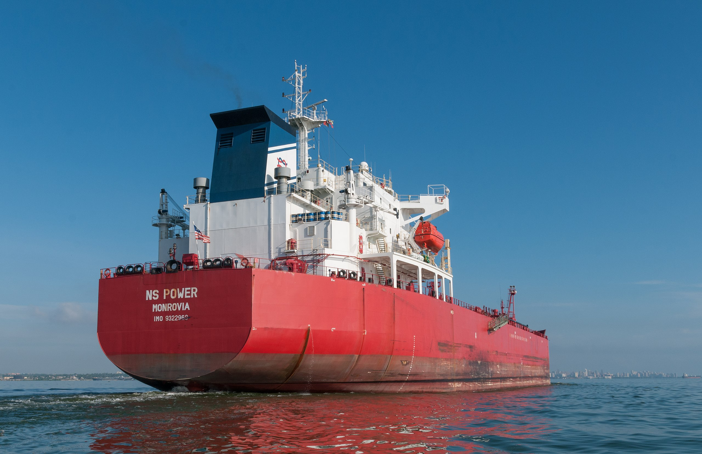

Introduction
Why did President Maduro suddenly become more aggressive in his pursuit of the Essequibo region of Guyana between October, 2023, and March, 2024? This change occurred because foreign leaders tried to compel him to stop. As reactance theory would suggest, compellence emboldened Maduro and resulted in him taking risks that jeopardised his initial goal.
Context
The Essequibo region, representing roughly two thirds of all of Guyana, is extremely valuable in terms of both mineral wealth and oil, and that sovereignty over this region has been disputed between nations for centuries (Braveboy-wagner, 1984, pp. 79, 97; Helman, 2016).
Under the Maduro regime this dispute (now between neighbouring Venezuela and Guyana) has gained new vigour, the severity of which ramped up in October of 2023. In October of 2023 the Venezuelan government announced that on the 3rd of December a referendum would be held to gauge the public’s support for annexing the Essequibo region (Reuters, 2023). In between the announcement and actual referendum, Venezuela began building a runway, which they vaguely described as being for the development of the Essequibo (Deutsche Welle, 2023). Additionally, they engaged in a hearing at the International Court of Justice where they attempted to have their sovereignty over the Essequibo region recognised (Gapsa, 2023). Following the referendum, in which most Venezuelans were allegedly found to be in support of the decision to annex the region, Venezuela covertly militarized the border (DefesaNet, 2023). Soon, however, global powers sided with the Guyanese, and on December 14th President Maduro met with the Guyanese President (Liy, 2023; Wilburg et al., 2023). This meeting resulted in an agreement that force would not be used to contest the disputed region (Wilburg et al., 2023).
When the United Kingdom (UK) announced it would be sending a warship to patrol the disputed waters on the behalf of Guyana a few weeks later, however, this angered Maduro and triggered intense militarization of the border into 2024: mobilisation of 5600 military forces on December 28th, 2023, (an amount larger than the entire Guyanese army of ~3000 troops), and building up of military bases and war-time capabilities on the border from January to March of 2024 (Alava, 2023; Berg et al., 2024; Hernandez-Roy et al., 2024; RFI, 2023). Finally, in March of 2024 the Maduro regime announced that the Essequibo region of Guyana was now the 24th Venezuelan state (Buitrago, 2024).
President Maduro's Goal
Reactance theory, which suggests that attempts at compellence often trigger a psychological aversion to surrender driven by anger and counterarguing, can explain how and why President Maduro’s actions differ in risk propensity over the October, 2023, to March, 2024, period (Powers & Altman, 2022, pp. 221, 225). This will be shown through identifying Maduro’s goal, the event which triggered reactance, and how that reactance manifested in terms of a change to his risk tolerance and goal orientation.
With an election to be held in July of 2024, President Maduro’s foremost goal was to increase his public support in an attempt to secure the presidency. Key metrics demonstrate a worsening economy and rising political tensions just preceding President Maduro’s announcement of the referendum. Venezuela has extremely high levels of poverty, with poverty rates increasing from 11.40% in 2013 (at the start of Nicholas Maduro’s presidency) to 67.97% in 2021, and GDP decreasing from 258.93 billion USD in 2013 to 106.33 billion USD in 2024 (IMF, n.d.; OCHA, 2023). Similarly, rising political tensions are demonstrated by the increase in the number of protests in Venezuela (marked by peaceful actors) from 1,945 in 2021 to 2,839 in 2023 and in the number of riots (marked by aggressive actors) from 53 in 2021 to 88 in 2023 (ACLED, 2024). Furthermore, a more granular analysis of the 2023 data reveals that the number of riots increased from 14 to 29 to 31 for the periods January - March, April - June, and July - September respectively (ACLED, 2024).
Given that Maduro’s initial actions suggested that he would be annexing the valuable Essequibo (which would invariably heighten the likelihood of foreign interventions), and that he framed this dispute and any foreign intervention as continued oppression following a long line of historical oppression, it is likely that, at least initially, his actions may have increased public support and thus were taken for that purpose. Annexing the Essequibo region would help garner political support for a myriad of reasons. One of them being that voters may perceive a link between their nation gaining a new valuable region and their economic conditions improving. Additionally, according to Weiss and Dafoe (2019, p. 968), when authoritarian leaders frame current actions as a response to a history of national injustices by historical powers, they are more likely to gain public support. In autocratic regimes such as Venezuela, it has also been found that it is unlikely that sanctions lead to regime change by causing an uprising in the most affected populations. Moreover, this is supported by the findings of Grossman et al. (2018, p. 1845) that economic sanctions may indeed increase public support for the leaders and increase hostility towards the sanctioner (Allen, 2008, p. 939). Similarly, Hellmeier (2020, p. 471) has found, “that interventions by foreign powers spark mobilization in favor of incumbent autocrats”.
The Event that Triggerred President Maduro to Resist
The second step in applying reactance theory is to identify the specific event which angered Maduro and thus triggered reactance. President Maduro was angered by the UK’s offer to send a warship to patrol the waters near Essequibo, just weeks after Venezuela and Guyana had come to an agreement to not use force to contest the region. As a response to these actions he announced “a joint defensive action of the entire Bolivarian National Armed Forces (FANB),” stating that, “The threat of the decadent, rotten, ex-empire of the United Kingdom is unacceptable.” (President Maduro as quoted by Alava, 2023)
The UK’s offer can be uniquely identified as the trigger for President Maduro’s reactance because prior similar actions by foreign militaries did not cause President Maduro to retaliate. Firstly, when Venezuela began to construct a runway in Bolívar near their Brazilian border for the vague purpose of developing the Essequibo, the Brazilians responded by militarising said border and committing their support to Guyana (Gadelha, 2023). Furthermore, a week prior to the agreement for peaceful engagement, the United States (US) reaffirmed their commitment to supporting Guyana by performing flight operations over the region (Liy, 2023). These actions are demonstrations of military strength, very similar to sending a warship to patrol the sea, however, neither of these actions provoked angry statements or further militarization. Thus, the UK’s intervention uniquely angered Maduro, triggering a substantive shift in his risk propensity.
President Maduro’s anger and the ensuing reactance occurred specifically because the UK’s offer of support was interpreted as an offence “against identity or violations of key rights and moral codes” which Forsberg and Pursiainen (2017, p. 23) state is often a source of anger. It is unlikely that the US and Brazil violated any moral codes as there is a common expectation that displays of force will be met with other displays of force, however, the violation of the agreement between Venezuela and Guyana to avoid the use of force likely signified a breaking of trust which insulted President Maduro. Additionally, though one may suggest that the UK involvement didn’t constitute a strong enough threat to trigger reactance, as shown by Powers and Altman (2022, p. 233), even weak threats can trigger reactance.
President Maduro's Risk Propensity - International Backlash
Thus understanding his initial goal and the event which likely triggered reactance, in order to apply reactance theory we must trace how President Maduro’s risk propensity varied over the October to March period. Using a method outlined by Driedger (2023) in his analysis of the actions of the Russian regime during the Georgian War of 2008, Crimea Annexation, and Ukraine Invasion, we can assert that President Maduro’s risk propensity did in fact vary as a result of reactance, and that this variance led him to take actions which did not further his initial goal of improving public support. Driedger (2023, pp. 203-204) suggests that changes in risk propensity can be identified by looking at how the leaders risked international backlash, domestic political support, and conflict entanglement.
Similarly to the Putin regime, President Maduro initially sought to legitimise his conduct as evident by the announcement of the referendum in October of 2023 and his willingness to go to the International Court of Justice (ICJ). The referendum could have provided moral justification if it showed that the majority of Venezuelans supported annexation of the Essequibo, as Maduro could then claim that he was guided by the will of the people. Likewise, if the ICJ ruled in their favour, Maduro would have had legal justification for his actions.
As suggested by Abramson and Carter (2016, pp. 676), usage of historical claims also presents a unique opportunity to “signal that a leader is not expansionist and dangerous for regional stability and security”. By using historical claims, Maduro was stating that he was simply trying to reobtain what is rightfully Venezuela’s, thus providing moral justification for his actions.
After the UK committed its involvement and Maduro became angry, however, no such steps were taken to legitimise his future actions besides his continued use of historical claims. In fact, the ICJ ruled on December 1st that neither state should take action to change the status quo, thereby invalidating any legal claim that Venezuela had to act, yet Maduro intensely militarised the border anyways (ICJ, 2023).
President Maduro's Risk Propensity - Domestic Political Support
_01.jpg)
Secondly, Maduro’s risk propensity changed with regards to domestic political support, which he initially intended to increase. According to Weiss and Dafoe (2019, p. 969-970), when making empty threats, explicit, empty threats worsen public approval, whereas vague, empty threats improve public approval. Thus President Maduro’s transition from making vague empty threats before being angered to explicit empty threats afterwards, demonstrates his changing in risk propensity with regards to domestic political support. Given that it is now November of 2024 and that there has yet to be an actual invasion of the Essequibo region by Venezuela in order to annex it, it is clear that any of the aggressive actions performed by Venezuela, which suggested that they were preparing to take the region, constitute an empty threat.
Prior to Maduro becoming angry, the Venezuelan military built an airstrip for which they provided a vague justification as mentioned above, and hence this constitutes a vague empty threat. Moreover, before Maduro was angered, militarization of the border was done covertly, which, as Poznansky (2021, pp. 328) has identified, is a less risky choice over overt action because it gives the actor plausible deniability.
After becoming angry, however, President Maduro publicly announced that he would be mobilising troops and that it was a response to UK involvement. Following this was an intense militarization of the border in terms of accumulation of weaponry and construction of permanent military structures. These actions could only be interpreted as an explicit threat to take the Essequibo by force, and thus, given that public approval worsens with the use of explicit empty threats, these actions demonstrate an increased risk tolerance for losing domestic political support after becoming angered. This increased risk tolerance was not exhibited prior to UK involvement.
Venezuela’s political instability around this period further demonstrates that Maduro’s actions were not goal oriented (with regards to improving public approval), or at the very least were not effective. For the October - December period of 2023 (prior to Maduro being angered) the number of riots within Venezuela dipped from 31 riots in the preceding period to 14 riots (ACLED, 2024). This is due to an increase in political support because of his actions with regard to the Essequibo. However, in the subsequent period of January - March of 2024 (the period after he was angered), the number of riots doubled to 28 (ACLED, 2024). Such a great increase in the number of riots, especially after they had just decreased, supports the assessment that his latter actions were not goal oriented.
Goal Orientation and Conflict Entanglement
Lastly, Maduro’s willingness to risk conflict entanglement increased over time as his initially vague and covert actions allowed for plausible deniability, which would limit conflict entanglement, however his later actions did not. If he was risk averse to conflict entanglement, Maduro would pursue specific individual goals and drop them if they appear unattainable within a reasonable time frame (Driedger, 2023, 213). Instead, however, President Maduro pursued the Essequibo region with increasing force as time progressed despite a lack of progress.
Thus Maduro was more risk tolerant and less goal oriented after he was angered by the UK’s involvement. This is what reactance theory would predict.
Conclusion
In light of all of the information presented, however, one might still conclude that President Maduro’s actions were consistently rational and goal oriented. For example, they may argue that instead of seeking to increase public support, President Maduro’s actual goal was to improve Venezuela’s economy by gaining the right to extract resources from the economically valuable Essequibo. This assessment is supported by the findings of Corrales (2020, pp. 49-50) that Venezuela has increasingly become more dependent on the sale of oil to Russia and of gold to Turkey and Iran, due to being cut off from most of the world by sanctions. As explained previously, these resources are abundant in the Essequibo region, and it is possible that if Venezuela solidifies their claim over the region they would be able to increase their exports and thus improve the worsening state of their economy. Henceforth, there exists a seductively simplistic claim that Maduro wanted the region because of its economic potential, and, if true, this would undermine the argument put forth in this paper by invalidating the foundation for our assessment of President Maduro’s change in risk propensity.
However, the Essequibo region itself provides little to Maduro and Venezuelans in the short term. This is because currently Venezuela's economic problems are not due to a lack of resources, but mismanagement and international sanctions (Maizland, 2024). This is evident by the fact that Venezuela’s proven oil reserves have actually increased slightly over Maduro’s term, from 298.35 billion barrels in 2013 to 303.01 billion barrels in 2023, whereas oil production has fallen by roughly 72%, from 2.79 to 0.78 million barrels per day (OPEC, 2024). This suggests that even if Venezuela were to annex the Essequibo, and subsequently gain more resources, it likely wouldn’t mean much for Venezuela’s economy as a lack of resources is not the cause of the decline. In fact, given Venezuela’s current mismanagement, developing the Essequibo region may simply present another burden.
In sum, the UK involvement in the Venezuela-Guyana border dispute angered President Maduro, specifically because it violated the agreement that Venezuela and Guyana had just made. This triggered reactance which caused Maduro to take on more risk, as shown by his diminished attempts to justify annexation, his increased willingness to risk domestic political support, and his engagement in a prolonged conflict through which he showed more aggression as time went on. As a result, the sudden change in Maduro’s actions between October, 2023, and March, 2024, can in part be explained by one thing: emotion clouded his judgement, as it often does to us all.
References
Sources
- Abramson, S. F., & Carter, D. B. (2016, November). The Historical Origins of Territorial Disputes. American Political Science Review, 110(4), 675-698. https://doi.org/10.1177/002200270832504410.1017/S0003055416000381
- ACLED. (2024). ACLED Codebook, 2024. Armed Conflict Location & Event Data Project (ACLED). Retrieved Nov 10, 2024, from https://acleddata.com/explorer/
- Alava, A. C. (2023, December 29). Venezuelan Military Conducts Exercise in Response to UK Warship ‘Provocation’. Venezuelanalysis. https://venezuelanalysis.com/news/venezuelan-military-conducts-exercise-in-response-to-uk-warship-provocation/
- Allen, S. H. (2008, December). The Domestic Political Costs of Economic Sanctions. Journal of Conflict Resolution, 52(6), 916-944. https://doi.org/10.1177/0022002708325044
- Berg, R. C., Hernandez-Roy, C., Ziemer, H., Bledsoe, R., Bermudez Jr., J. S., & Jun, J. (2024, May 14). The Essequibo Pressure Cooker: Runaway Nationalism and Maduro's Compellence Strategy. Centre for Strategic and International Studies. https://www.csis.org/analysis/essequibo-pressure-cooker-runaway-nationalism-and-maduros-compellence-strategy
- Braveboy-wagner, J. A. (1984). The Venezuela-Guyana border dispute: Britain's colonial legacy in Latin America (A Westview Replica Edition ed.). Avalon Publishing.
- Buitrago, D. (2024, March 21). Venezuela creates new state in territory under dispute with Guyana. Reuters. https://www.reuters.com/world/americas/venezuela-creates-new-state-territory-under-dispute-with-guyana-2024-03-21/
- Corrales, J. (2020, July). Authoritarian Survival: Why Maduro Hasn't Fallen. Journal of Democracy. Journal of Democracy, 31(3), 39-53. https://doi.org/10.1353/jod.2020.0044
- DefesaNet. (2023, December 3). Exclusivo – Venezuela inicia operações com Forças Especiais junto à fronteira com o Brasil e Guiana. DefesaNet. https://www.defesanet.com.br/ghl/exclusivo-venezuela-inicia-operacoes-com-forcas-especiais-junto-a-fronteira-com-o-brasil-e-guiana/
- Deutsche Welle. (2023, October 29). Venezuela construye pista de aterrizaje cerca del Esequibo – DW – 29/10/2023. Deutsche Welle. https://www.dw.com/es/venezuela-construye-pista-de-aterrizaje-cerca-del-esequibo/a-67246404
- Driedger, J. J. (2023). Risk acceptance and offensive war: The case of Russia under the Putin regime. Contemporary Security Policy, 44(2), 199-225. https://doi.org/10.1080/13523260.2023.2164974
- Forsberg, T., & Pursiainen, C. (2017, Feb 15). The Psychological Dimension of Russian Foreign Policy: Putin and the Annexation of Crimea. Global Society, 31(2), 220-244. https://doi.org/10.1080/13600826.2016.1274963
- Gadelha, I. (2023, December 6). Cúpula militar brasileira prevê que Maduro invadirá a Guiana pelo mar. Metrópoles. https://www.metropoles.com/colunas/igor-gadelha/militar-maduro-guiana-mar
- Gapsa, M. (2023, November 30). Guyana v Venezuela: Intriguing Pleadings in an (In)conspicuous Case. EJIL: Talk! https://www.ejiltalk.org/guyana-v-venezuela-intriguing-pleadings-in-an-inconspicuous-case/
- Grossman, G., Manekin, D., & Margalit, Y. (2018). How Sanctions Affect Public Opinion in Target Countries: Experimental Evidence From Israel. Comparative Political Studies, 51(14), 1823-1857. https://doi.org/10.1177/0010414018774370
- Hellmeier, S. (2020, June 29). How foreign pressure affects mass mobilization in favor of authoritarian regimes. European Journal of International Relations, 27(2), 450-477. https://doi.org/10.1177/13540661209345
- Helman, C. (2016, June 30). With Second Big Oil Discovery, Exxon Puts Guyana On The Map. Forbes. https://www.forbes.com/sites/christopherhelman/2016/06/30/with-second-big-oil-discovery-exxon-puts-guyana-on-the-map/
- Hernandez-Roy, C., Ziemer, H., Bledsoe, R., Bermudez Jr., J. S., & Jun, J. (2024, February 9). Miscalculation and Escalation over the Essequibo: New Insights into the Risks of Venezuela's Compellence Strategy. Centre for Strategic and International Studies. https://www.csis.org/analysis/miscalculation-and-escalation-over-essequibo-new-insights-risks-venezuelas-compellence
- ICJ. (2023, December 1). Order of 1 December 2023 [Arbitral Award of 3 October 1899 (Guyana v. Venezuela)]. International Court of Justice. https://www.icj-cij.org/sites/default/files/case-related/171/171-20231201-sum-01-00-en.pdf
- IMF. (n.d.). GDP, current prices. International Monetary Fund. Retrieved October 29, 2024, from https://www.imf.org/external/datamapper/NGDPD@WEO/VEN?zoom=VEN&highlight=VEN
- Liy, M. V. (2023, December 7). US conducts flight operations in Guyana after Venezuela's referendum on the Essequibo region. El País. https://english.elpais.com/international/2023-12-07/us-conducts-flight-operations-in-guyana-after-venezuelas-referendum-on-the-essequibo-region.html
- Maizland, L. (2024, July 31). Venezuela: The Rise and Fall of a Petrostate. Council on Foreign Relations. https://www.cfr.org/backgrounder/venezuela-crisis
- OCHA. (2023, December 18). Venezuela - Percentage of households in poverty and extreme poverty from 2002 to 2021. United Nations Office for the Coordination of Humanitarian Affairs. Retrieved October 29, 2024, from https://data.humdata.org/dataset/percentage-of-households-in-poverty-and-extreme-poverty-in-venezuela-from-2002-to-2021?#:~:text=2002%20to%202021-,Venezuela%20%2D%20Percentage%20of%20households%20in%20poverty%20and%20extreme,in%20from%202002%20to%202021&te
- OPEC. (2024, July 2). Annual Statistical Bulletin 2024. Organisation of Petroleum Exporting Companies (OPEC). https://publications.opec.org/asb
- Powers, K. E., & Altman, D. (2022, June 22). The Psychology of Coercion Failure: How Reactance Explains Resistance to Threats. American Journal of Political Science, 67(1), 221-238. https://doi.org/10.1111/ajps.12711
- Poznansky, M. (2021, July 21). The Psychology of Overt and Covert Intervention. Security Studies, 30(3), 325-353. https://doi.org/10.1080/09636412.2021.1951833
- Reuters. (2023, Oct 20). Venezuela sets referendum date on territory dispute with Guyana. Reuters. https://www.reuters.com/world/americas/venezuela-sets-referendum-date-territory-dispute-with-guyana-2023-10-20/
- RFI. (2023, 12 4). Disputa entre Venezuela e Guiana pelo Essequibo coloca Brasil em situação desconfortável. Radio France Internationale. https://www.rfi.fr/br/podcasts/o-mundo-agora/20231204-disputa-entre-venezuela-e-guiana-pelo-essequibo-coloca-brasil-em-situa%C3%A7%C3%A3o-desconfort%C3%A1vel
- Weiss, J. C., & Dafoe, A. (2019, December). Authoritarian Audiences, Rhetoric, and Propaganda in International Crises: Evidence from China. International Studies Quarterly, 63(4), 963-973. https://doi.org/10.1093/isq/sqz059
- Wilburg, K., Sequera, V., & Cobb, J. S. (2023, December 14). Guyana, Venezuela agree to not use force or escalate tensions in Esequibo dispute. Reuters. https://www.reuters.com/world/americas/venezuela-guyana-presidents-meet-amid-territorial-dispute-2023-12-14/
Pictures
- https://commons.wikimedia.org/wiki/File:Guyana_Venezuela_border_controversy_map.png
- https://www.pexels.com/photo/a-man-holding-a-flag-and-holding-a-sign-27516741/
- https://military-history.fandom.com/wiki/River-class_offshore_patrol_vessel
- https://www.un.org/ungifts/emblem-international-court-justice
- https://commons.wikimedia.org/wiki/File:Nicol%C3%A1s_Maduro_(2019-10-25)_01.jpg
- https://commons.wikimedia.org/wiki/File:Escuderos_Medics_March_Venezuela_2017.jpg
- https://commons.wikimedia.org/wiki/File:Oil_tanker_crossing_the_bridge_over_Lake_Maracaibo_4.jpg
{kind=link}